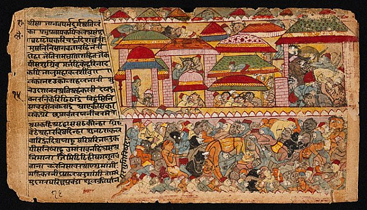
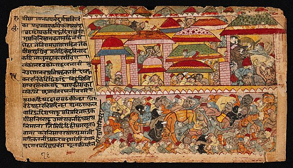
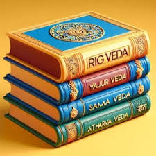
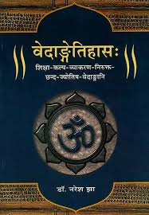
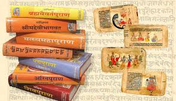
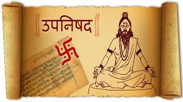
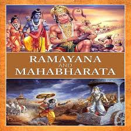

“विद्या ददाति विनयं विनयाद्याति पात्रताम्।
पात्रत्वाद्धनमाप्नोति धनाद्धर्मं ततः सुखम्॥”
Ancient Indian Literature
Vedas
The Vedas are ancient and revered scriptures that form the cornerstone of Indian spiritual, cultural, and philosophical traditions. They are considered the oldest religious texts in the world, dating back to approximately 1500–1200 BCE. Written in Sanskrit, the Vedas are regarded as Shruti (that which is heard), implying divine revelation transmitted orally from generation to generation before being documented. Their influence extends beyond religion, encompassing philosophy, ethics, science, and art, reflecting the profound intellectual achievements of ancient India.The Vedas are divided into four main collections: Rigveda, Yajurveda, Samaveda, and Atharvaveda. Rigveda, the oldest and most significant, contains hymns (or suktas) dedicated to various deities such as Agni, Indra, and Varuna, celebrating cosmic order and invoking divine blessings. It is a rich repository of poetic compositions, offering profound insights into the worldview of early Vedic society. Yajurveda is a manual for rituals and sacrifices, detailing the procedures and chants used in Vedic ceremonies. It is divided into two parts: the Krishna (Black) Yajurveda and the Shukla (White) Yajurveda. Samaveda, often referred to as the Veda of melodies, contains hymns primarily derived from the Rigveda, meant to be sung during rituals, emphasizing the importance of sound and intonation. Atharvaveda stands apart with its focus on practical knowledge, including healing practices, protective charms, and philosophical musings, showcasing the holistic approach of the Vedic tradition. Each Veda is further divided into four parts: Samhitas, Brahmanas, Aranyakas, and Upanishads. The Samhitas are collections of hymns and prayers, the Brahmanas explain the rituals and ceremonies; the Aranyakas, or "forest texts," focus on meditative practices; and the Upanishads delve into philosophical inquiries about the nature of existence, the self (Atman), and ultimate reality (Brahman). Together, these layers reflect the evolution of Vedic thought from ritualistic practices to profound metaphysical exploration. The Vedas provide a comprehensive understanding of the universe and human life. They touch upon cosmology, astronomy, mathematics, and medicine, revealing an advanced knowledge system that was integrated with spiritual practices. Concepts like the interconnectedness of all existence, the cyclical nature of time, and the harmony between humans and nature are central themes. The Vedas also emphasize ethical living, community harmony, and the pursuit of truth, making their teachings timeless.In essence, the Vedas are not just religious texts but encyclopedic works embodying the spiritual and intellectual legacy of ancient India. They represent the quest for knowledge, the search for truth, and the harmony between the material and spiritual worlds, remaining a source of guidance and inspiration for humanity.
Upa Vedas
Upavedas, or the "auxiliary Vedas," are a set of texts that expand upon the core Vedic knowledge by addressing practical disciplines and arts essential for daily life and societal welfare. They serve as complementary bodies of knowledge associated with the four main Vedas, focusing on specialized areas such as medicine, warfare, music, and governance. The Upavedas highlight the holistic approach of the ancient Indian knowledge system, where spiritual wisdom and practical sciences are interwoven.The four Upavedas and their respective domains are: Ayurveda (Science of Life), Dhanurveda (Science of Warfare), Gandharvaveda (Science of Music and Performing Arts), Arthashastra (Science of Governance and Economics) Ayurveda, associated with the Rigveda is an ancient system of medicine and health. It provides comprehensive knowledge of physical and mental well-being, emphasizing prevention and cure through natural means. Ayurveda is rooted in the balance of the three doshas (Vata, Pitta, and Kapha) and includes areas like herbal medicine, surgery, detoxification, diet, and rejuvenation.It is still widely practiced today, influencing modern alternative medicine and holistic health practices globally. Linked to the Yajurveda, Dhanurveda focuses on the art and science of warfare, archery, and weaponry. It encompasses training in combat techniques, strategies, and ethical conduct in battle. The text includes descriptions of various weapons, military formations, and the duties of warriors, emphasizing discipline and valor. Dhanurveda also discusses mental preparedness and the integration of physical and spiritual strength in combat. Associated with the Samaveda, Gandharvaveda is the study of music, dance, and drama. It explores the relationship between sound and spirituality, emphasizing the transformative power of music. Gandharvaveda lays the foundation for Indian classical music and dance, detailing various ragas, talas, and performance techniques. It portrays music as a means to elevate the soul, fostering emotional expression and spiritual connection. Linked to the Atharvaveda, Arthashastra deals with statecraft, governance, law, and economics. It provides insights into the administration of kingdoms, taxation, diplomacy, and military strategy. Texts like Kautilya’s Arthashastra draw from this tradition, offering pragmatic guidance on political and economic matters. The Arthashastra highlights the importance of ethical governance and the welfare of citizens as essential duties of rulers. The Upavedas exemplify the Vedic civilization's holistic understanding of life, where spiritual knowledge was seamlessly integrated with practical disciplines. These texts emphasize the interconnectedness of all fields of knowledge, from health and arts to governance and defense. In modern times, the Upavedas continue to influence various disciplines. Ayurveda is recognized globally for its contributions to natural medicine, while Gandharvaveda has shaped the evolution of Indian classical music and performing arts. The principles of Dhanurveda and Arthashastra remain relevant in areas like martial arts and public administration. Together, the Upavedas reflect the timeless wisdom and universal applicability of the Vedic tradition.
Vedangas
The Vedangas are a group of six auxiliary disciplines associated with the study and understanding of the Vedas. The term "Vedanga" translates to "limbs of the Vedas," signifying their essential role in preserving, interpreting, and applying Vedic knowledge. These disciplines serve as tools to aid in the proper recitation, comprehension, and ritual application of the Vedic texts. Rooted in the ancient Indian intellectual tradition, the Vedangas emphasize the integration of linguistic, scientific, and ritualistic expertise. The six Vedangas are: Shiksha (Phonetics and Pronunciation), Chandas (Meter), Vyakarana (Grammar), Nirukta (Etymology and Interpretation), Kalpa (Ritual Instructions), Jyotisha (Astronomy and Astrology) Shiksha focuses on the correct pronunciation and intonation of Vedic hymns. It ensures the precision of sound, which is considered vital for maintaining the potency of the Vedic mantras. This discipline involves the study of accent (svara), articulation (varna), and the proper combination of syllables (sandhi), thereby preserving the oral tradition of the Vedas. Chandas deals with the study of poetic meters used in the Vedas. It identifies and categorizes various metrical patterns, ensuring the rhythmic structure of hymns and verses. Knowledge of Chandas helps maintain the aesthetic and spiritual impact of Vedic recitations. The most common meters include Gayatri, Anushtubh, Trishtubh, and Jagati. Vyakarana is the study of Sanskrit grammar and linguistic rules. Pioneered by scholars like Panini, it provides a systematic framework for constructing sentences and understanding the meaning of Vedic texts. Vyakarana ensures the clarity and consistency of language, enabling precise interpretation and application of Vedic knowledge. Nirukta is the study of the origin and meanings of words in the Vedas. It explains obscure and archaic terms, making the texts accessible to scholars and practitioners. Yaska’s Nirukta is the foundational text of this discipline, emphasizing the importance of understanding the contextual and symbolic significance of Vedic words. Kalpa provides guidelines for performing Vedic rituals and ceremonies. It is divided into four subcategories: Shrauta Sutras (rituals based on Shruti), Grihya Sutras (domestic rituals), Dharma Sutras (ethical and legal duties), and Shulba Sutras (geometry for constructing altars). Kalpa ensures the accurate execution of rituals, aligning them with Vedic principles. Jyotisha focuses on the calculation of time and celestial movements to determine auspicious moments for rituals. It involves the study of planetary positions, eclipses, and lunar cycles, highlighting the connection between cosmic phenomena and human activities. Jyotisha underscores the Vedic worldview of harmony between the macrocosm and microcosm. The Vedangas collectively function as the framework for preserving and interpreting the Vedas. They illustrate the Vedic civilization's commitment to precision, discipline, and intellectual rigor. Beyond their ritualistic applications, the Vedangas have significantly influenced Indian sciences, arts, and linguistics, leaving a lasting legacy on cultural and academic traditions.
Puranas
The Puranas are an extensive genre of ancient Indian literature that preserve a wealth of knowledge spanning mythology, history, cosmology, philosophy, and cultural traditions. Derived from the Sanskrit word Purana, meaning "ancient" or "old," these texts serve as an invaluable repository of India’s spiritual and cultural heritage. Composed primarily in Sanskrit, the Puranas bridge the abstract, philosophical teachings of the Vedas with the narrative storytelling format accessible to the general populace, thereby enriching religious practice and cultural identity. Traditionally, there are 18 Mahapuranas (major Puranas) and numerous Upapuranas (minor Puranas), categorized into three groups based on their primary focus: Vaishnavism (dedicated to Vishnu), Shaivism (dedicated to Shiva), and Shaktism (dedicated to the Divine Mother). Prominent examples include the Vishnu Purana, Shiva Purana, and Devi Bhagavata Purana. The Puranas are characterized by a blend of allegorical narratives, moral teachings, and historical accounts. Most follow a five-fold structure known as Pancha-Lakshana: Sarga (creation of the universe), Pratisarga (re-creation after dissolution), Vamsha (genealogies of gods, sages, and kings), Manvantara (cosmic cycles and eras), and Vamshanucharita (historical narratives of dynasties). This framework allows the texts to seamlessly weave together metaphysical concepts with vivid storytelling, making them both instructional and engaging. They often explain cosmic phenomena through symbolic language, describing vast cycles of time (kalpas and yugas) to convey the impermanence and cyclical nature of existence. Thematically, the Puranas delve into a wide array of subjects. They explore cosmology, outlining the creation, sustenance, and dissolution of the universe and emphasizing the interconnection between the cosmic and human realms. Mythology occupies a central role, recounting the stories of deities, demons, and epic heroes, each tale imparting moral and spiritual lessons. The Puranas also serve as guides to dharma (ethical conduct) and bhakti (devotion), promoting values like compassion, humility, and selflessness. Historical accounts, though semi-mythical, provide genealogies of ancient rulers and sages, offering insights into India's past. The texts also document ritual practices, festivals, pilgrimages, and cultural custom, acting as encyclopedic records of ancient Indian life. Despite their ancient origins, the Puranas remain relevant in modern times. They continue to inspire religious practices, art, and literature, with their stories forming the backbone of Indian cultural traditions. Temples, festivals, and devotional practices are deeply rooted in Puranic narratives. Philosophically, texts like the Bhagavata Purana popularized the concept of bhakti yoga (devotional worship), which remains central to Indian spirituality today. Additionally, the Puranas provide valuable historical and cultural insights, helping scholars understand the evolution of Indian society, religion, and knowledge systems. In essence, the Puranas are much more than mythological texts; they represent a holistic worldview where spirituality, ethics, history, and science coexist. They reflect the richness of ancient Indian thought and its enduring relevance, offering timeless wisdom that continues to guide and inspire humanity across generations.
Upanishads
The Upanishads are a collection of ancient Indian philosophical texts that form the concluding portion of the Vedic literature, often referred to as Vedanta (the "end of the Vedas"). They are considered the essence of the Vedas, focusing on profound spiritual concepts and philosophical inquiries rather than rituals or ceremonies. Composed between 800 BCE and 200 BCE, the Upanishads are written in Sanskrit and explore the fundamental nature of existence, the self (Atman), and ultimate reality (Brahman). They are regarded as the foundation of Indian philosophy and have significantly influenced spiritual traditions globally. There are over 200 known Upanishads, but around 13 are considered primary and are extensively studied. These include the Isha, Kena, Katha, Prashna, Mundaka, Mandukya, Aitareya, Taittiriya, Chandogya, and Brihadaranyaka Upanishads. Each text presents profound metaphysical discussions, employing dialogues, parables, and analogies to convey complex ideas. The Upanishads primarily focus on the concept of Brahman—the ultimate, infinite, and formless reality underlying all existence. They describe Brahman as eternal, unchanging, and the source of all creation. Alongside this, they explore the notion of Atman, the innermost essence or soul of an individual. The central teaching is the realization of the unity of Atman and Brahman, emphasizing that the self is not separate from the universal reality but is, in essence, the same. Key themes in the Upanishads include the nature of knowledge (jnana), liberation (moksha), karma (action and its consequences), and meditation (dhyana). Liberation is presented as the ultimate goal of life, achieved through self-realization and transcending ignorance. Unlike earlier Vedic texts that focused on external rituals, the Upanishads advocate inner exploration and self-discipline as the path to enlightenment. The teachings of the Upanishads are both universal and timeless, influencing various philosophical schools in India, including Advaita Vedanta, Samkhya, and Yoga. They also shaped global thinkers and spiritual traditions, inspiring figures like Schopenhauer, Emerson, and Vivekananda. Modern spirituality often draws from Upanishadic wisdom, emphasizing concepts like mindfulness, interconnectedness, and the pursuit of inner peace. The Upanishads use a unique literary style, blending poetry and prose, and are often structured as conversations between teachers and seekers. For instance, the Katha Upanishad narrates a dialogue between a young boy, Nachiketa, and Yama, the god of death, about the nature of the soul and immortality. Such narratives make the texts both philosophical and accessible. In essence, the Upanishads are profound spiritual treatises that delve into the deepest questions of existence. They mark a shift from ritualistic practices to introspection and self-realization, embodying the spiritual and intellectual richness of ancient India. Their timeless wisdom continues to inspire seekers, offering insights into the nature of reality and the path to ultimate liberation.
Itihasa
The term Itihasa, meaning "thus it happened," refers to the epic narratives of ancient India that blend history, mythology, philosophy, and ethics. The two principal Itihasas are the Ramayana and the Mahabharata, which hold a central place in Indian culture, shaping its spiritual and moral ethos. These texts are not merely historical accounts but serve as repositories of wisdom, guiding individuals in their pursuit of righteousness (dharma), self-realization, and societal harmony. They weave together stories of gods, heroes, and ordinary people to address universal themes like duty, justice, devotion, and the eternal conflict between good and evil. The Ramayana, authored by Sage Valmiki, recounts the life and adventures of Lord Rama, an avatar of Vishnu, who exemplifies the ideal king, husband, and human being. Spanning seven books (kandas) and around 24,000 verses, it narrates Rama's journey to rescue his wife, Sita, from the demon king Ravana. Alongside, it highlights virtues such as loyalty, courage, sacrifice, and the adherence to duty despite immense challenges. Characters like Hanuman, Lakshmana, and Sita serve as archetypes of devotion, strength, and resilience. The Ramayana is not just a story of heroism but a profound exploration of ethical living, portraying the significance of maintaining dharma in personal and social life. The Mahabharata, attributed to Sage Vyasa, is the world's longest epic, consisting of over 100,000 verses across 18 books (parvas). It chronicles the epic Kurukshetra war between the Pandavas and the Kauravas, delving deeply into themes of morality, power, justice, and the complexities of human emotions. At its core is the Bhagavad Gita, a philosophical dialogue between Lord Krishna and Arjuna, which addresses the dilemmas of duty, selflessness, and spiritual wisdom. The Mahabharata transcends its narrative of war to explore the intricacies of human relationships, the consequences of karma, and the struggle to uphold dharma in a morally ambiguous world. The Itihasas serve multiple purposes: as moral guides, spiritual texts, and cultural chronicles. They emphasize the cyclic nature of time, the interconnectedness of life, and the pursuit of righteousness as the ultimate goal. Their characters are not one-dimensional; they reflect human virtues and flaws, making their lessons deeply relatable and timeless. Through their engaging narratives, the Itihasas communicate profound philosophical truths, bridging the gap between divine ideals and human realities. Beyond their spiritual significance, the Itihasas have profoundly influenced Indian art, literature, and performance traditions. Their stories are depicted in temple carvings, classical dance forms, and modern adaptations, ensuring their continued relevance. They have also transcended geographical and cultural boundaries, inspiring thinkers and creatives worldwide with their universal themes. In essence, the Itihasas are not just epics but living traditions that provide a moral and spiritual framework for individuals and societies. They encapsulate the eternal truths of life, blending historical and mythical elements to inspire and guide humanity toward a harmonious existence. Their timeless wisdom continues to resonate, offering valuable insights into the challenges and aspirations of human life.